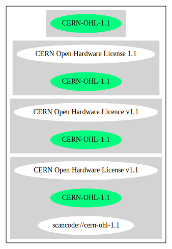

Key |
Value |
|---|---|
Fullname |
CERN Open Hardware License v1.1 |
Shortname |
CERN-OHL-1.1 |
Rating |
Unknown, probably Attention or Stop or No-Go |
Classification |
NoCopyleft |
Other Names:
scancode://cern-ohl-1.1
Homepage: https://www.ohwr.org/project/licenses/wikis/cern-ohl-v1.1
SPDX: http://spdx.org/licenses/CERN-OHL-1.1.json
https://www.ohwr.org/project/licenses/wikis/cern-ohl-v1.1
CERN OHL v1.1
2011-07-08 - CERN, Geneva, Switzerland
CERN Open Hardware Licence v1.1
Preamble
Through this CERN Open Hardware Licence ("CERN OHL") version 1.1, the Organization wishes to disseminate its hardware designs (as published on http://www.ohwr.org/) as widely as possible, and generally to foster collaboration among public research hardware designers. The CERN OHL is copyright of CERN. Anyone is welcome to use the CERN OHL, in unmodified form only, for the distribution of his own Open Hardware designs. Any other right is reserved.
1. Definitions
In this Licence, the following terms have the following meanings:
"Licence" means this CERN OHL.
"Documentation" means schematic diagrams, designs, circuit or circuit board layouts, mechanical drawings, flow charts and descriptive text, and other explanatory material that is explicitly stated as being made available under the conditions of this Licence. The Documentation may be in any medium, including but not limited to computer files and representations on paper, film, or any other media.
"Product" means either an entire, or any part of a, device built using the Documentation or the modified Documentation.
"Licensee" means any natural or legal person exercising rights under this Licence.
"Licensor" means any natural or legal person that creates or modifies Documentation and subsequently communicates to the public and/ or distributes the resulting Documentation under the terms and conditions of this Licence.
A Licensee may at the same time be a Licensor, and vice versa.
2. Applicability
2.1 This Licence governs the use, copying, modification, communication to the public and distribution of the Documentation, and the manufacture and distribution of Products. By exercising any right granted under this Licence, the Licensee irrevocably accepts these terms and conditions.
2.2 This Licence is granted by the Licensor directly to the Licensee, and shall apply worldwide and without limitation in time. The Licensee may assign his licence rights or grant sub-licences.
2.3 This Licence does not apply to software, firmware, or code loaded into programmable devices which may be used in conjunction with the Documentation, the modified Documentation or with Products. The use of such software, firmware, or code is subject to the applicable licence terms and conditions.
3. Copying, modification, communication to the public and distribution of the Documentation
3.1 The Licensee shall keep intact all copyright and trademarks notices and all notices that refer to this Licence and to the disclaimer of warranties that is included in the Documentation. He shall include a copy thereof in every copy of the documentation or, as the case may be, modified Documentation, that he communicates to the public or distributes.
3.2 The Licensee may use, copy, communicate to the public and distribute verbatim copies of the Documentation, in any medium, subject to the requirements specified in section 3.1.
3.3 The Licensee may modify the Documentation or any portion thereof. The Licensee may communicate to the public and distribute the modified Documentation (thereby in addition to being a Licensee also becoming a Licensor), always provided that he shall:
a. comply with section 3.1;
b. cause the modified Documentation to carry prominent notices stating that the Licensee has modified the Documentation, with the date and details of the modifications;
c. license the modified Documentation under the terms and conditions of this Licence or, where applicable, a later version of this Licence as may be issued by CERN; and
d. send a copy of the modified Documentation to all Licensors that contributed to the parts of the Documentation that were modified, as well as to any other Licensor who has requested to receive a copy of the modified Documentation and has provided a means of contact with the Documentation.
3.4 The Licence includes a licence to those patents or registered designs that are held by the Licensor, to the extent necessary to make use of the rights granted under this Licence. The scope of this section 3.4 shall be strictly limited to the parts of the Documentation or modified Documentation created by the Licensor.
4. Manufacture and distribution of Products
4.1 The Licensee may manufacture or distribute Products always provided that the Licensee distributes to each recipient of such Products a copy of the Documentation or modified Documentation, as applicable, and complies with section 3.
4.2 The Licensee is invited to inform in writing any Licensor who has indicated its wish to receive this information about the type, quantity and dates of production of Products the Licensee has (had) manufactured.
5. Warranty and liability
5.1 DISCLAIMER – The Documentation and any modified Documentation are provided "as is" and any express or implied warranties, including, but not limited to, implied warranties of merchantability, of satisfactory quality, and fitness for a particular purpose or use are disclaimed in respect of the Documentation, the modified Documentation or any Product. The Licensor makes no representation that the Documentation, modified Documentation, or any Product, does or will not infringe any patent, copyright, trade secret or other proprietary right. The entire risk as to the use, quality, and performance of a Product shall be with the Licensee and not the Licensor. This disclaimer of warranty is an essential part of this Licence and a condition for the grant of any rights granted under this Licence. The Licensee warrants that it does not act in a consumer capacity.
5.2 LIMITATION OF LIABILITY – The Licensor shall have no liability for direct, indirect, special, incidental, consequential, exemplary, punitive or other damages of any character including, without limitation, procurement of substitute goods or services, loss of use, data or profits, or business interruption, however caused and on any theory of contract, warranty, tort (including negligence), product liability or otherwise, arising in any way in relation to the Documentation, modified Documentation and/or the use, manufacture or distribution of a Product, even if advised of the possibility of such damages, and the Licensee shall hold the Licensor(s) free and harmless from any liability, costs, damages, fees and expenses, including claims by third parties, in relation to such use.
6. General
6.1 The rights granted under this Licence do not imply or represent any transfer or assignment of intellectual property rights to the Licensee.
6.2 The Licensee shall not use or make reference to any of the names, acronyms, images or logos under which the Licensor is known, save in so far as required to comply with section 3. Any such permitted use or reference shall be factual and shall in no event suggest any kind of endorsement by the Licensor or its personnel of the modified Documentation or any Product, or any kind of implication by the Licensor or its personnel in the preparation of the modified Documentation or Product.
6.3 CERN may publish updated versions of this Licence which retain the same general provisions as this version, but differ in detail so far this is required and reasonable. New versions will be published with a unique version number.
6.4 This Licence shall terminate with immediate effect, upon written notice and without involvement of a court if the Licensee fails to comply with any of its terms and conditions, or if the Licensee initiates legal action against Licensor in relation to this Licence. Section 5 shall continue to apply.
6.5 Except as may be otherwise agreed with the Intergovernmental Organization, any dispute with respect to this Licence involving an Intergovernmental Organization shall, by virtue of the latter's Intergovernmental status, be settled by international arbitration. The arbitration proceedings shall be held at the place where the Intergovernmental Organization has its seat. The arbitral award shall be final and binding upon the parties, who hereby expressly agree to renounce any form of appeal or revision.{
"__impliedNames": [
"CERN-OHL-1.1",
"CERN Open Hardware License v1.1",
"scancode://cern-ohl-1.1"
],
"__impliedId": "CERN-OHL-1.1",
"facts": {
"SPDX": {
"isSPDXLicenseDeprecated": false,
"spdxFullName": "CERN Open Hardware License v1.1",
"spdxDetailsURL": "http://spdx.org/licenses/CERN-OHL-1.1.json",
"_sourceURL": "https://spdx.org/licenses/CERN-OHL-1.1.html",
"spdxLicIsOSIApproved": false,
"spdxSeeAlso": [
"\nhttps://www.ohwr.org/project/licenses/wikis/cern-ohl-v1.1"
],
"_implications": {
"__impliedNames": [
"CERN-OHL-1.1",
"CERN Open Hardware License v1.1"
],
"__impliedId": "CERN-OHL-1.1",
"__isOsiApproved": false,
"__impliedURLs": [
[
"SPDX",
"http://spdx.org/licenses/CERN-OHL-1.1.json"
],
[
null,
"\nhttps://www.ohwr.org/project/licenses/wikis/cern-ohl-v1.1"
]
]
},
"spdxLicenseId": "CERN-OHL-1.1"
},
"Scancode": {
"otherUrls": [
"https://www.ohwr.org/project/licenses/wikis/cern-ohl-v1.1"
],
"homepageUrl": "https://www.ohwr.org/project/licenses/wikis/cern-ohl-v1.1",
"shortName": "CERN Open Hardware License v1.1",
"textUrls": null,
"text": "CERN OHL v1.1\n\n2011-07-08 - CERN, Geneva, Switzerland\n\nCERN Open Hardware Licence v1.1\n\nPreamble\n\nThrough this CERN Open Hardware Licence (\"CERN OHL\") version 1.1, the Organization wishes to disseminate its hardware designs (as published on http://www.ohwr.org/) as widely as possible, and generally to foster collaboration among public research hardware designers. The CERN OHL is copyright of CERN. Anyone is welcome to use the CERN OHL, in unmodified form only, for the distribution of his own Open Hardware designs. Any other right is reserved.\n\n1. Definitions\n\nIn this Licence, the following terms have the following meanings:\n\n\"Licence\" means this CERN OHL.\n\n\"Documentation\" means schematic diagrams, designs, circuit or circuit board layouts, mechanical drawings, flow charts and descriptive text, and other explanatory material that is explicitly stated as being made available under the conditions of this Licence. The Documentation may be in any medium, including but not limited to computer files and representations on paper, film, or any other media.\n\n\"Product\" means either an entire, or any part of a, device built using the Documentation or the modified Documentation.\n\n\"Licensee\" means any natural or legal person exercising rights under this Licence.\n\n\"Licensor\" means any natural or legal person that creates or modifies Documentation and subsequently communicates to the public and/ or distributes the resulting Documentation under the terms and conditions of this Licence.\n\nA Licensee may at the same time be a Licensor, and vice versa.\n\n\n\n2. Applicability\n\n 2.1 This Licence governs the use, copying, modification, communication to the public and distribution of the Documentation, and the manufacture and distribution of Products. By exercising any right granted under this Licence, the Licensee irrevocably accepts these terms and conditions.\n\n 2.2 This Licence is granted by the Licensor directly to the Licensee, and shall apply worldwide and without limitation in time. The Licensee may assign his licence rights or grant sub-licences.\n\n 2.3 This Licence does not apply to software, firmware, or code loaded into programmable devices which may be used in conjunction with the Documentation, the modified Documentation or with Products. The use of such software, firmware, or code is subject to the applicable licence terms and conditions.\n\n3. Copying, modification, communication to the public and distribution of the Documentation\n\n 3.1 The Licensee shall keep intact all copyright and trademarks notices and all notices that refer to this Licence and to the disclaimer of warranties that is included in the Documentation. He shall include a copy thereof in every copy of the documentation or, as the case may be, modified Documentation, that he communicates to the public or distributes.\n\n 3.2 The Licensee may use, copy, communicate to the public and distribute verbatim copies of the Documentation, in any medium, subject to the requirements specified in section 3.1.\n\n 3.3 The Licensee may modify the Documentation or any portion thereof. The Licensee may communicate to the public and distribute the modified Documentation (thereby in addition to being a Licensee also becoming a Licensor), always provided that he shall:\n\n a. comply with section 3.1;\n\n b. cause the modified Documentation to carry prominent notices stating that the Licensee has modified the Documentation, with the date and details of the modifications;\n\n c. license the modified Documentation under the terms and conditions of this Licence or, where applicable, a later version of this Licence as may be issued by CERN; and\n\n d. send a copy of the modified Documentation to all Licensors that contributed to the parts of the Documentation that were modified, as well as to any other Licensor who has requested to receive a copy of the modified Documentation and has provided a means of contact with the Documentation.\n\n 3.4 The Licence includes a licence to those patents or registered designs that are held by the Licensor, to the extent necessary to make use of the rights granted under this Licence. The scope of this section 3.4 shall be strictly limited to the parts of the Documentation or modified Documentation created by the Licensor.\n\n4. Manufacture and distribution of Products\n\n 4.1 The Licensee may manufacture or distribute Products always provided that the Licensee distributes to each recipient of such Products a copy of the Documentation or modified Documentation, as applicable, and complies with section 3.\n\n 4.2 The Licensee is invited to inform in writing any Licensor who has indicated its wish to receive this information about the type, quantity and dates of production of Products the Licensee has (had) manufactured.\n\n5. Warranty and liability\n\n 5.1 DISCLAIMER â The Documentation and any modified Documentation are provided \"as is\" and any express or implied warranties, including, but not limited to, implied warranties of merchantability, of satisfactory quality, and fitness for a particular purpose or use are disclaimed in respect of the Documentation, the modified Documentation or any Product. The Licensor makes no representation that the Documentation, modified Documentation, or any Product, does or will not infringe any patent, copyright, trade secret or other proprietary right. The entire risk as to the use, quality, and performance of a Product shall be with the Licensee and not the Licensor. This disclaimer of warranty is an essential part of this Licence and a condition for the grant of any rights granted under this Licence. The Licensee warrants that it does not act in a consumer capacity.\n\n 5.2 LIMITATION OF LIABILITY â The Licensor shall have no liability for direct, indirect, special, incidental, consequential, exemplary, punitive or other damages of any character including, without limitation, procurement of substitute goods or services, loss of use, data or profits, or business interruption, however caused and on any theory of contract, warranty, tort (including negligence), product liability or otherwise, arising in any way in relation to the Documentation, modified Documentation and/or the use, manufacture or distribution of a Product, even if advised of the possibility of such damages, and the Licensee shall hold the Licensor(s) free and harmless from any liability, costs, damages, fees and expenses, including claims by third parties, in relation to such use.\n\n6. General\n\n 6.1 The rights granted under this Licence do not imply or represent any transfer or assignment of intellectual property rights to the Licensee.\n\n 6.2 The Licensee shall not use or make reference to any of the names, acronyms, images or logos under which the Licensor is known, save in so far as required to comply with section 3. Any such permitted use or reference shall be factual and shall in no event suggest any kind of endorsement by the Licensor or its personnel of the modified Documentation or any Product, or any kind of implication by the Licensor or its personnel in the preparation of the modified Documentation or Product.\n\n 6.3 CERN may publish updated versions of this Licence which retain the same general provisions as this version, but differ in detail so far this is required and reasonable. New versions will be published with a unique version number.\n\n 6.4 This Licence shall terminate with immediate effect, upon written notice and without involvement of a court if the Licensee fails to comply with any of its terms and conditions, or if the Licensee initiates legal action against Licensor in relation to this Licence. Section 5 shall continue to apply.\n\n 6.5 Except as may be otherwise agreed with the Intergovernmental Organization, any dispute with respect to this Licence involving an Intergovernmental Organization shall, by virtue of the latter's Intergovernmental status, be settled by international arbitration. The arbitration proceedings shall be held at the place where the Intergovernmental Organization has its seat. The arbitral award shall be final and binding upon the parties, who hereby expressly agree to renounce any form of appeal or revision.",
"category": "Permissive",
"osiUrl": null,
"owner": "CERN",
"_sourceURL": "https://github.com/nexB/scancode-toolkit/blob/develop/src/licensedcode/data/licenses/cern-ohl-1.1.yml",
"key": "cern-ohl-1.1",
"name": "CERN Open Hardware License v1.1",
"spdxId": "CERN-OHL-1.1",
"notes": null,
"_implications": {
"__impliedNames": [
"scancode://cern-ohl-1.1",
"CERN Open Hardware License v1.1",
"CERN-OHL-1.1"
],
"__impliedId": "CERN-OHL-1.1",
"__impliedCopyleft": [
[
"Scancode",
"NoCopyleft"
]
],
"__calculatedCopyleft": "NoCopyleft",
"__impliedText": "CERN OHL v1.1\n\n2011-07-08 - CERN, Geneva, Switzerland\n\nCERN Open Hardware Licence v1.1\n\nPreamble\n\nThrough this CERN Open Hardware Licence (\"CERN OHL\") version 1.1, the Organization wishes to disseminate its hardware designs (as published on http://www.ohwr.org/) as widely as possible, and generally to foster collaboration among public research hardware designers. The CERN OHL is copyright of CERN. Anyone is welcome to use the CERN OHL, in unmodified form only, for the distribution of his own Open Hardware designs. Any other right is reserved.\n\n1. Definitions\n\nIn this Licence, the following terms have the following meanings:\n\n\"Licence\" means this CERN OHL.\n\n\"Documentation\" means schematic diagrams, designs, circuit or circuit board layouts, mechanical drawings, flow charts and descriptive text, and other explanatory material that is explicitly stated as being made available under the conditions of this Licence. The Documentation may be in any medium, including but not limited to computer files and representations on paper, film, or any other media.\n\n\"Product\" means either an entire, or any part of a, device built using the Documentation or the modified Documentation.\n\n\"Licensee\" means any natural or legal person exercising rights under this Licence.\n\n\"Licensor\" means any natural or legal person that creates or modifies Documentation and subsequently communicates to the public and/ or distributes the resulting Documentation under the terms and conditions of this Licence.\n\nA Licensee may at the same time be a Licensor, and vice versa.\n\n\n\n2. Applicability\n\n 2.1 This Licence governs the use, copying, modification, communication to the public and distribution of the Documentation, and the manufacture and distribution of Products. By exercising any right granted under this Licence, the Licensee irrevocably accepts these terms and conditions.\n\n 2.2 This Licence is granted by the Licensor directly to the Licensee, and shall apply worldwide and without limitation in time. The Licensee may assign his licence rights or grant sub-licences.\n\n 2.3 This Licence does not apply to software, firmware, or code loaded into programmable devices which may be used in conjunction with the Documentation, the modified Documentation or with Products. The use of such software, firmware, or code is subject to the applicable licence terms and conditions.\n\n3. Copying, modification, communication to the public and distribution of the Documentation\n\n 3.1 The Licensee shall keep intact all copyright and trademarks notices and all notices that refer to this Licence and to the disclaimer of warranties that is included in the Documentation. He shall include a copy thereof in every copy of the documentation or, as the case may be, modified Documentation, that he communicates to the public or distributes.\n\n 3.2 The Licensee may use, copy, communicate to the public and distribute verbatim copies of the Documentation, in any medium, subject to the requirements specified in section 3.1.\n\n 3.3 The Licensee may modify the Documentation or any portion thereof. The Licensee may communicate to the public and distribute the modified Documentation (thereby in addition to being a Licensee also becoming a Licensor), always provided that he shall:\n\n a. comply with section 3.1;\n\n b. cause the modified Documentation to carry prominent notices stating that the Licensee has modified the Documentation, with the date and details of the modifications;\n\n c. license the modified Documentation under the terms and conditions of this Licence or, where applicable, a later version of this Licence as may be issued by CERN; and\n\n d. send a copy of the modified Documentation to all Licensors that contributed to the parts of the Documentation that were modified, as well as to any other Licensor who has requested to receive a copy of the modified Documentation and has provided a means of contact with the Documentation.\n\n 3.4 The Licence includes a licence to those patents or registered designs that are held by the Licensor, to the extent necessary to make use of the rights granted under this Licence. The scope of this section 3.4 shall be strictly limited to the parts of the Documentation or modified Documentation created by the Licensor.\n\n4. Manufacture and distribution of Products\n\n 4.1 The Licensee may manufacture or distribute Products always provided that the Licensee distributes to each recipient of such Products a copy of the Documentation or modified Documentation, as applicable, and complies with section 3.\n\n 4.2 The Licensee is invited to inform in writing any Licensor who has indicated its wish to receive this information about the type, quantity and dates of production of Products the Licensee has (had) manufactured.\n\n5. Warranty and liability\n\n 5.1 DISCLAIMER â The Documentation and any modified Documentation are provided \"as is\" and any express or implied warranties, including, but not limited to, implied warranties of merchantability, of satisfactory quality, and fitness for a particular purpose or use are disclaimed in respect of the Documentation, the modified Documentation or any Product. The Licensor makes no representation that the Documentation, modified Documentation, or any Product, does or will not infringe any patent, copyright, trade secret or other proprietary right. The entire risk as to the use, quality, and performance of a Product shall be with the Licensee and not the Licensor. This disclaimer of warranty is an essential part of this Licence and a condition for the grant of any rights granted under this Licence. The Licensee warrants that it does not act in a consumer capacity.\n\n 5.2 LIMITATION OF LIABILITY â The Licensor shall have no liability for direct, indirect, special, incidental, consequential, exemplary, punitive or other damages of any character including, without limitation, procurement of substitute goods or services, loss of use, data or profits, or business interruption, however caused and on any theory of contract, warranty, tort (including negligence), product liability or otherwise, arising in any way in relation to the Documentation, modified Documentation and/or the use, manufacture or distribution of a Product, even if advised of the possibility of such damages, and the Licensee shall hold the Licensor(s) free and harmless from any liability, costs, damages, fees and expenses, including claims by third parties, in relation to such use.\n\n6. General\n\n 6.1 The rights granted under this Licence do not imply or represent any transfer or assignment of intellectual property rights to the Licensee.\n\n 6.2 The Licensee shall not use or make reference to any of the names, acronyms, images or logos under which the Licensor is known, save in so far as required to comply with section 3. Any such permitted use or reference shall be factual and shall in no event suggest any kind of endorsement by the Licensor or its personnel of the modified Documentation or any Product, or any kind of implication by the Licensor or its personnel in the preparation of the modified Documentation or Product.\n\n 6.3 CERN may publish updated versions of this Licence which retain the same general provisions as this version, but differ in detail so far this is required and reasonable. New versions will be published with a unique version number.\n\n 6.4 This Licence shall terminate with immediate effect, upon written notice and without involvement of a court if the Licensee fails to comply with any of its terms and conditions, or if the Licensee initiates legal action against Licensor in relation to this Licence. Section 5 shall continue to apply.\n\n 6.5 Except as may be otherwise agreed with the Intergovernmental Organization, any dispute with respect to this Licence involving an Intergovernmental Organization shall, by virtue of the latter's Intergovernmental status, be settled by international arbitration. The arbitration proceedings shall be held at the place where the Intergovernmental Organization has its seat. The arbitral award shall be final and binding upon the parties, who hereby expressly agree to renounce any form of appeal or revision.",
"__impliedURLs": [
[
"Homepage",
"https://www.ohwr.org/project/licenses/wikis/cern-ohl-v1.1"
],
[
null,
"https://www.ohwr.org/project/licenses/wikis/cern-ohl-v1.1"
]
]
}
}
},
"__impliedCopyleft": [
[
"Scancode",
"NoCopyleft"
]
],
"__calculatedCopyleft": "NoCopyleft",
"__isOsiApproved": false,
"__impliedText": "CERN OHL v1.1\n\n2011-07-08 - CERN, Geneva, Switzerland\n\nCERN Open Hardware Licence v1.1\n\nPreamble\n\nThrough this CERN Open Hardware Licence (\"CERN OHL\") version 1.1, the Organization wishes to disseminate its hardware designs (as published on http://www.ohwr.org/) as widely as possible, and generally to foster collaboration among public research hardware designers. The CERN OHL is copyright of CERN. Anyone is welcome to use the CERN OHL, in unmodified form only, for the distribution of his own Open Hardware designs. Any other right is reserved.\n\n1. Definitions\n\nIn this Licence, the following terms have the following meanings:\n\n\"Licence\" means this CERN OHL.\n\n\"Documentation\" means schematic diagrams, designs, circuit or circuit board layouts, mechanical drawings, flow charts and descriptive text, and other explanatory material that is explicitly stated as being made available under the conditions of this Licence. The Documentation may be in any medium, including but not limited to computer files and representations on paper, film, or any other media.\n\n\"Product\" means either an entire, or any part of a, device built using the Documentation or the modified Documentation.\n\n\"Licensee\" means any natural or legal person exercising rights under this Licence.\n\n\"Licensor\" means any natural or legal person that creates or modifies Documentation and subsequently communicates to the public and/ or distributes the resulting Documentation under the terms and conditions of this Licence.\n\nA Licensee may at the same time be a Licensor, and vice versa.\n\n\n\n2. Applicability\n\n 2.1 This Licence governs the use, copying, modification, communication to the public and distribution of the Documentation, and the manufacture and distribution of Products. By exercising any right granted under this Licence, the Licensee irrevocably accepts these terms and conditions.\n\n 2.2 This Licence is granted by the Licensor directly to the Licensee, and shall apply worldwide and without limitation in time. The Licensee may assign his licence rights or grant sub-licences.\n\n 2.3 This Licence does not apply to software, firmware, or code loaded into programmable devices which may be used in conjunction with the Documentation, the modified Documentation or with Products. The use of such software, firmware, or code is subject to the applicable licence terms and conditions.\n\n3. Copying, modification, communication to the public and distribution of the Documentation\n\n 3.1 The Licensee shall keep intact all copyright and trademarks notices and all notices that refer to this Licence and to the disclaimer of warranties that is included in the Documentation. He shall include a copy thereof in every copy of the documentation or, as the case may be, modified Documentation, that he communicates to the public or distributes.\n\n 3.2 The Licensee may use, copy, communicate to the public and distribute verbatim copies of the Documentation, in any medium, subject to the requirements specified in section 3.1.\n\n 3.3 The Licensee may modify the Documentation or any portion thereof. The Licensee may communicate to the public and distribute the modified Documentation (thereby in addition to being a Licensee also becoming a Licensor), always provided that he shall:\n\n a. comply with section 3.1;\n\n b. cause the modified Documentation to carry prominent notices stating that the Licensee has modified the Documentation, with the date and details of the modifications;\n\n c. license the modified Documentation under the terms and conditions of this Licence or, where applicable, a later version of this Licence as may be issued by CERN; and\n\n d. send a copy of the modified Documentation to all Licensors that contributed to the parts of the Documentation that were modified, as well as to any other Licensor who has requested to receive a copy of the modified Documentation and has provided a means of contact with the Documentation.\n\n 3.4 The Licence includes a licence to those patents or registered designs that are held by the Licensor, to the extent necessary to make use of the rights granted under this Licence. The scope of this section 3.4 shall be strictly limited to the parts of the Documentation or modified Documentation created by the Licensor.\n\n4. Manufacture and distribution of Products\n\n 4.1 The Licensee may manufacture or distribute Products always provided that the Licensee distributes to each recipient of such Products a copy of the Documentation or modified Documentation, as applicable, and complies with section 3.\n\n 4.2 The Licensee is invited to inform in writing any Licensor who has indicated its wish to receive this information about the type, quantity and dates of production of Products the Licensee has (had) manufactured.\n\n5. Warranty and liability\n\n 5.1 DISCLAIMER â The Documentation and any modified Documentation are provided \"as is\" and any express or implied warranties, including, but not limited to, implied warranties of merchantability, of satisfactory quality, and fitness for a particular purpose or use are disclaimed in respect of the Documentation, the modified Documentation or any Product. The Licensor makes no representation that the Documentation, modified Documentation, or any Product, does or will not infringe any patent, copyright, trade secret or other proprietary right. The entire risk as to the use, quality, and performance of a Product shall be with the Licensee and not the Licensor. This disclaimer of warranty is an essential part of this Licence and a condition for the grant of any rights granted under this Licence. The Licensee warrants that it does not act in a consumer capacity.\n\n 5.2 LIMITATION OF LIABILITY â The Licensor shall have no liability for direct, indirect, special, incidental, consequential, exemplary, punitive or other damages of any character including, without limitation, procurement of substitute goods or services, loss of use, data or profits, or business interruption, however caused and on any theory of contract, warranty, tort (including negligence), product liability or otherwise, arising in any way in relation to the Documentation, modified Documentation and/or the use, manufacture or distribution of a Product, even if advised of the possibility of such damages, and the Licensee shall hold the Licensor(s) free and harmless from any liability, costs, damages, fees and expenses, including claims by third parties, in relation to such use.\n\n6. General\n\n 6.1 The rights granted under this Licence do not imply or represent any transfer or assignment of intellectual property rights to the Licensee.\n\n 6.2 The Licensee shall not use or make reference to any of the names, acronyms, images or logos under which the Licensor is known, save in so far as required to comply with section 3. Any such permitted use or reference shall be factual and shall in no event suggest any kind of endorsement by the Licensor or its personnel of the modified Documentation or any Product, or any kind of implication by the Licensor or its personnel in the preparation of the modified Documentation or Product.\n\n 6.3 CERN may publish updated versions of this Licence which retain the same general provisions as this version, but differ in detail so far this is required and reasonable. New versions will be published with a unique version number.\n\n 6.4 This Licence shall terminate with immediate effect, upon written notice and without involvement of a court if the Licensee fails to comply with any of its terms and conditions, or if the Licensee initiates legal action against Licensor in relation to this Licence. Section 5 shall continue to apply.\n\n 6.5 Except as may be otherwise agreed with the Intergovernmental Organization, any dispute with respect to this Licence involving an Intergovernmental Organization shall, by virtue of the latter's Intergovernmental status, be settled by international arbitration. The arbitration proceedings shall be held at the place where the Intergovernmental Organization has its seat. The arbitral award shall be final and binding upon the parties, who hereby expressly agree to renounce any form of appeal or revision.",
"__impliedURLs": [
[
"SPDX",
"http://spdx.org/licenses/CERN-OHL-1.1.json"
],
[
null,
"\nhttps://www.ohwr.org/project/licenses/wikis/cern-ohl-v1.1"
],
[
"Homepage",
"https://www.ohwr.org/project/licenses/wikis/cern-ohl-v1.1"
],
[
null,
"https://www.ohwr.org/project/licenses/wikis/cern-ohl-v1.1"
]
]
}